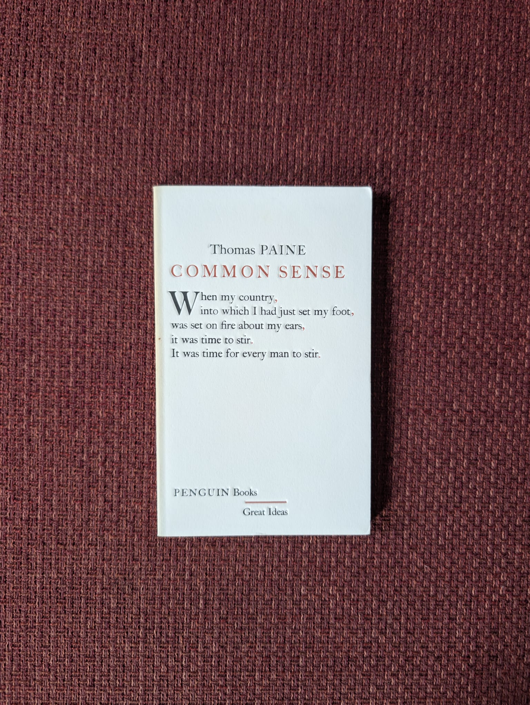
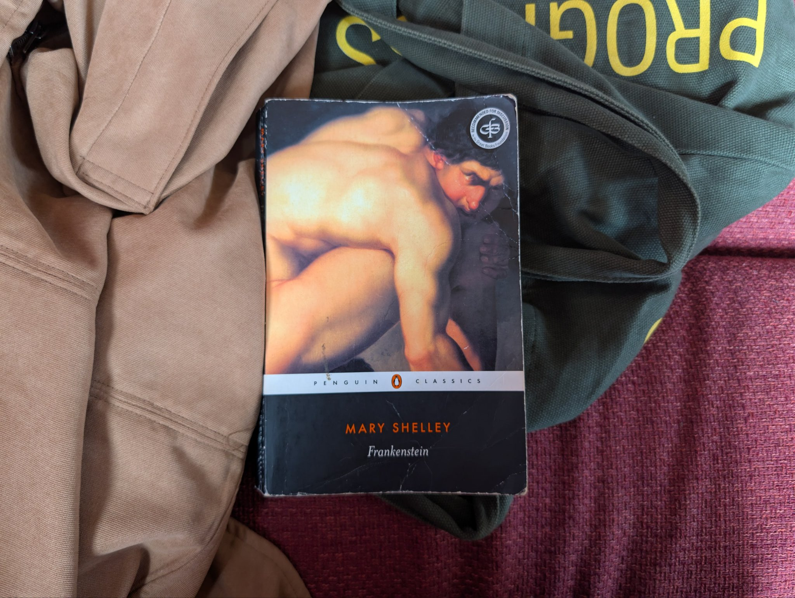
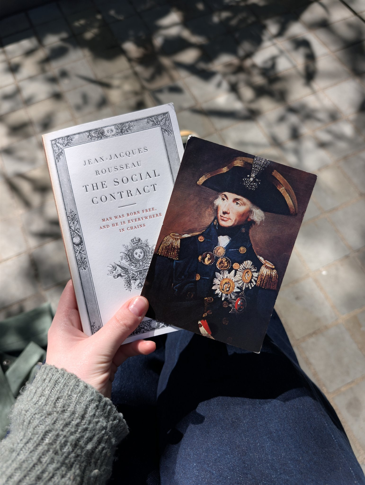
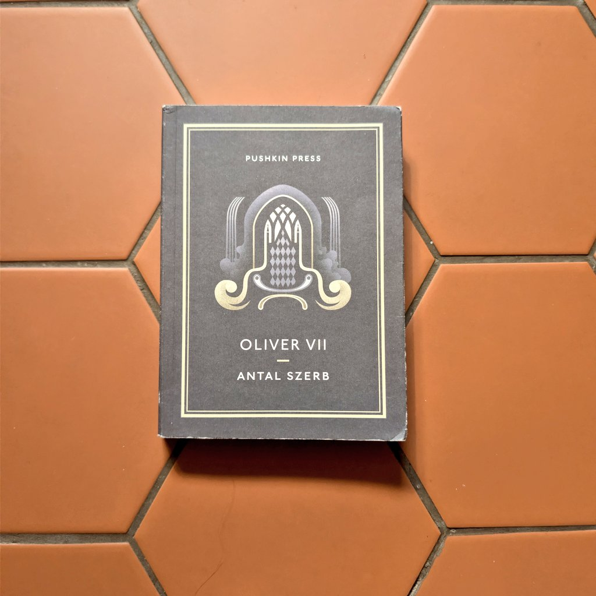
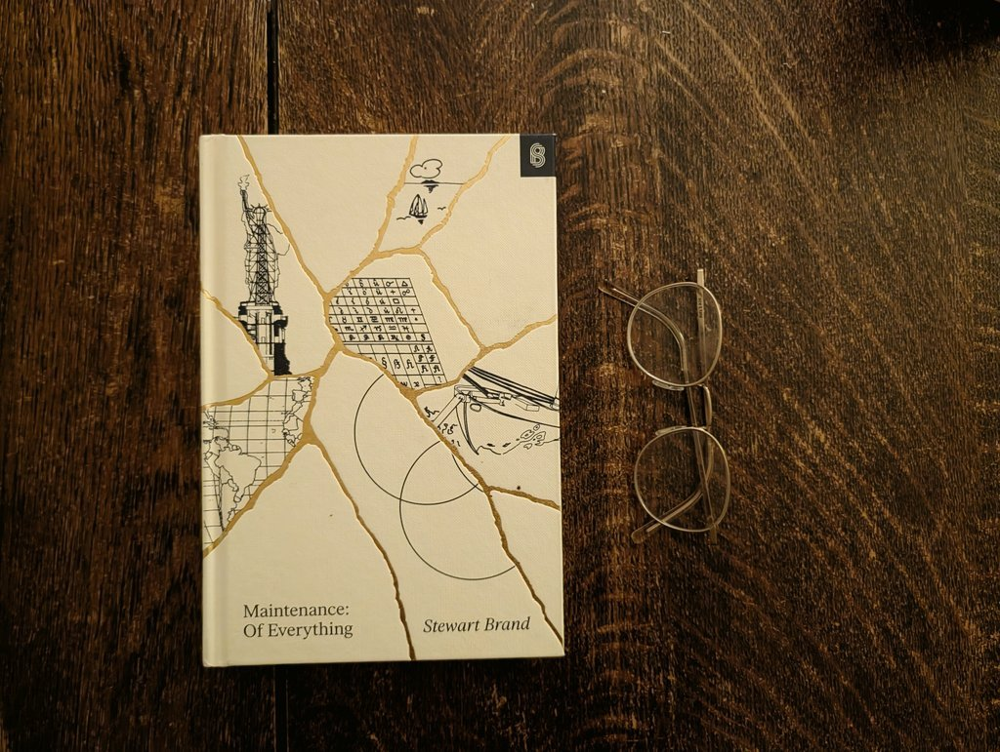

✦ Rachel Edwards ✦
Books I read in 2026

Common Sense, by Thomas Paine
Great stuff. Real bang-the-drum campaigning, and I was convinced. American independence was the right move.
The Communist Manifesto, by Karl Marx and Friedrich Engels
I was charmed by how capital-R Romantic this was. It has some beautiful (and terrifying) turns of phrase, real blood-thrumming stuff. Shame about everything else.

Frankenstein, by Mary Shelley
I enjoyed this very much. Dragged a little in places – why does Victor always need to take 2 months in bed to process any emotional event? get a grip!! – but that's the Romantics for you.

The Social Contract (abridged), by Jean-Jacques Rousseau
Rousseau's ideal state is like a delicate little orchid that could potentially survive for a few weeks under perfect conditions. And I really cannot forgive him for abandoning his five babies to die & then writing a book about how to raise children.

Oliver VII, by Antal Szerb
Oliver II, king of a small impoverished European nation, carefully orchestrates a coup against himself, and flees to Venice. While there, he falls in with a group of conmen, who propose a daring scam: for their new friend to impersonate the exiled king. Hilarity ensues.
Wuthering Heights, by Emily Brontë
The classic female fantasy (a man is obsessed with you) meets the classic English nightmare (your next-door neighbour hates you). A very charismatic novel – readable, lots to contemplate, and lots of lines that would be romantic if they had all been better behaved.

Maintenance: Of Everything: Part One, by Stewart Brand
Modern paperbacks are perfect-bound, held together with glue that will melt in the heat if you try to read in a sauna. So if you want to read in the sauna, you need a book that's sewn together. This book is brilliant, and will do the job.
The Iliad, by Homer
I read this aloud in a book club with some friends, over the course of 18 months. It was magnificent.
We had two other translations for reference, but didn't read them cover-to-cover: in English, nothing can compete with iambic pentameter.

The Invisible Life of Addie LaRue, by V. E. Schwab
Faustian bargain with romantic characteristics. Great book to read on the plane.

Anna Karenina, by Leo Tolstoy
I found the structure of this book somewhat frustrating, but I can't deny it's brilliant. I'm particularly fond of Levin.